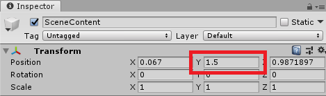

Microsoft Mixed Reality Toolkit Release Notes
Version 2.1.0
This release of the Microsoft Mixed Reality Toolkit supports the following devices and platforms.
- Microsoft HoloLens 2
- Microsoft HoloLens (1st gen)
- Windows Mixed Reality Immersive headsets
- OpenVR
The following software is required.
- Microsoft Visual Studio (2017 or 2019) Community Edition or higher
- Windows 10 SDK 18362 or later (installed by the Visual Studio Installer)
- Unity 2018.4, 2019.1 or 2019.2
Upgrading projects to 2.1.0
The 2.1.0 release has some changes that may impact application projects, including some files moving to new folder locations. Breaking change details, including mitigation guidance, can be found in the Updating 2.0.0 to 2.1.0 article.
For the smoothest upgrade path, please use the following steps.
- Close Unity
- Delete MixedRealityToolkit (the project may not have all listed folders)
- MixedRealityToolkit
- MixedRealityToolkit.Examples
- MixedRealityToolkit.Extensions
Note
If additional extensions have been installed, please make a backup prior to deleting this folder.
- MixedRealityToolkit.Providers
- MixedRealityToolkit.SDK
- MixedRealityToolkit.Services
- MixedRealityToolkit.Tools
Important
Do NOT delete the MixedRealityToolkit.Generated folder.
- Delete the Library folder
- Re-open the project in Unity
- Import the new unity packages
- Foundation - Import this package first
- (Optional) Tools
- (Optional) Extensions
Note
If additional extensions had been installed, they may need to be re-imported.
- (Optional) Examples
- Close Unity and Delete the Library folder. This step is necessary to force Unity to refresh its asset database and reconcile existing custom profiles.
- Launch Unity, and for each scene in the project
- Delete MixedRealityToolkit and MixedRealityPlayspace, if present, from the hierarchy
- Select MixedRealityToolkit -> Add to Scene and Configure
- Select MixedRealityToolkit -> Utilities -> Update -> Controller Mapping Profiles (only needs to be done once) - This will update any custom Controller Mapping Profiles with updated axes and data, while leaving your custom-assigned input actions intact
What's new in 2.1.0
Dwell interaction (Experimental)
MRTK has added experimental support for dwell interactions. Dwell interactions enable applications to respond to a user focusing their gaze or motion controller on an interactable object for a predefined period of time.
Please refer to change 5594 for details.
Hand menu example updates
The hand menu example has received visual updates (no code changes).
MRTK Examples Hub (Experimental)
The MRTK Examples Hub is now part of the MixedRealityToolkit.Examples package, in the Experimental folder. For information on how to build and use the sample, please see the examples hub article.
Near menu control
Near Menu is a UX control which provides a collection of buttons or other UI components. It is floating around the user's body and easily accessible anytime. Since it is loosely coupled with the user, it does not disturb the user's interaction with the target content. The user can use the 'Pin' button to world-lock/unlock the menu. The menu can be grabbed and placed at a specific position.
Please see Near Menu for more information.
Pressable button for Unity UI
Support for pressable buttons on Unity UI canvases has been added. The HandInteractionExamples demo scene, in the MixedRealityToolkit.Examples package, demonstrates this feature.
Speech command confirmation label
A new speech command confirmation label (SpeechConfirmationTooltip.prefab) has been added to provide functionality that matches the Microsoft HoloLens 2 shell. Please see the speech input article for more information.
Known issues in 2.1.0
The sections below highlight some of the known issues in the Microsoft Mixed Reality Toolkit.
Long paths
When building on Windows, there is a MAX_PATH limit of 255 characters. Unity is affected by these limits and may fail to build a binary if its resolved output path is longer than 255 characters.
This can manifest as CS0006 errors in Visual Studio that look like:
CS0006: Metadata file 'C:\path\to\longer\file\that\is\longer\than\255\characters\mrtk.long.binary.name.dll' could not be found.
This can be worked around by moving the Unity project folder closer to the root of the drive, for example:
C:\src\project
Please see this issue for more background information.
Runtime profile swapping
MRTK does not fully support profile swapping at runtime. This feature is being investigated for a future release. Please see issues 4289, 5465 and 5466 for more information.
Unity 2019: Could not copy the file HolographicAppRemoting.dll
There is a known issue with version 3.0.0 of the Windows Mixed Reality package for Unity 2019. If the project has this version installed, the following error will be encountered when compiling in Microsoft Visual Studio.
To work around the issues, please update to a newer version using Window > Package Manager in the Unity editor.
VR/Immersive devices: Content in some demo scenes is placed below the user
Some demo scenes contained in the Examples package are optimized for HoloLens device's (headset's y position is 0). These scenes may place objects below the user when run on VR/Immersive device's (headset's Y position is the distance from the floor). To work around this issue, select the Scene Content object, in the Hierarchy, and set the Transform's Position Y value to 1.5 (1.5 meters, or the preferred headset height).

Version 2.0.1
This hotfix release of Mixed Reality Toolkit fixes a couple of small bugs when consuming Mixed Reality Toolkit in NuGet package form. In addition, this release introduce the NuGet package as a release mechanism for Mixed Reality Toolkit.
Upgrading projects to 2.0.1
For non-NuGet package cases, the upgrade from 2.0.0 should not have an effect when consuming Mixed Reality Toolkit as .unitypackages or source. To upgrade your Unity project to 2.0.1 from before 2.0.0, follow the same instructions as:
Currently, the upgrade path from non-NuGet package to NuGet package version of Mixed Reality Toolkit is not officially supported. Look out for that in the coming releases.
To add Mixed Reality Toolkit to your project in the form of a NuGet package, do the following:
- Download the latest NuGet For Unity .unitypackage
- Import the .unitypackage into your Unity Project.
- Click on the
NuGet > Manage NuGet Packagesmenu. - Search for
Microsoft.MixedReality.Toolkit, and pressInstallon the packages you wish to bring-in:- Microsoft.MixedReality.Toolkit.Foundation: This package contains everything needed to work with Mixed Reality Toolkit.
- Microsoft.MixedReality.Toolkit.Examples: This package contains example scenes of Mixed Reality Toolkit functionality.
- Microsoft.MixedReality.Toolkit.Extensions: This package contains extensions to Mixed Reality Toolkit.
- Microsoft.MixedReality.Toolkit.Tools: This package contains useful tooling for Unity.
What's new in 2.0.1
Consuming Mixed Reality Toolkit as a NuGet package will reduce compilation time, the amount of .csproj files when editing code, and allow for a simple update mechanism for future versions.
Version 2.0.0
This release of the Microsoft Mixed Reality Toolkit supports the following devices and platforms.
- Microsoft HoloLens 2
- Microsoft HoloLens (1st gen)
- Windows Mixed Reality Immersive headsets
- OpenVR
The following software is required.
- Microsoft Visual Studio (2017 or 2019) Community Edition or higher
- Windows 10 SDK 18362 or later (installed by the Visual Studio Installer)
- Unity 2018.4, 2019.1 or 2019.2
Upgrading projects to 2.0.0
Since the RC2 release, there have been several changes that may impact application projects, including some files moving to new folder locations. Breaking change details, including mitigation guidance, can be found in the Updating RC2 to 2.0.0 article.
For the smoothest upgrade path, please use the following steps.
- Close Unity
- Delete MixedRealityToolkit (the project may not have all listed folders)
- MixedRealityToolkit
- MixedRealityToolkit.Examples
- MixedRealityToolkit.Extensions
Note
If additional extensions have been installed, please make a backup prior to deleting this folder.
- MixedRealityToolkit.Providers
- MixedRealityToolkit.SDK
- MixedRealityToolkit.Services
- MixedRealityToolkit.Tools
Important
Do NOT delete the MixedRealityToolkit.Generated folder.
- Delete the Library folder
- Re-open the project in Unity
- Import the new unity packages
- Foundation - Import this package first
- (Optional) Tools
- (Optional) Extensions
Note
If additional extensions had been installed, they may need to be re-imported.
- (Optional) Examples
- Close Unity and Delete the Library folder. This step is necessary to force Unity to refresh its asset database and reconcile existing custom profiles.
- Launch Unity, and for each scene in the project
- Delete MixedRealityToolkit and MixedRealityPlayspace, if present, from the hierarchy
- Select MixedRealityToolkit -> Add to Scene and Configure
Important
Some profiles have been changed (properties have been added) in this release. If the project has custom profiles, please open them to verify that all of the updated properties are correctly configured.
What's new in 2.0.0
BoundingBox
- Improvements
- Normalized the handle asset size and scaling logic
- The handle asset is now sized to 1-meter
- Default values and examples are updated
- New features
- Animated handle by proximity
- Match the HoloLens 2 shell behavior
- Handles can be configured to appear only when a hand is close to them
- New example scene
- The BoundingBoxExample scene, in the Examples package (Demos\UX\BoundingBox\Scenes\BoundingBoxExamples.unity), shows various types of configurations
Important
Normalized asset handle size and scaling logic require updated handle scale values. With this change, the existing bounding box handle will be displayed in a very large size. Please refer to the Bounding box handle styles section in the Bounding Box documentation for updated recommended values for the handle size. Handle configuration examples can be found in the BoundingBoxExamples scene.

Clipping Example
The ClippingExamples scene, in the Examples package (Demos\StandardShader\Scenes\ClippingExamples.unity), demonstrates using the MRTK Standard Shader’s new clipping feature.
CoreServices
The CoreServices static class works in conjunction with the MixedRealityServiceRegistry to provide applications with a fast and convenient mechanism to acquire instances of core services (ex: Input System).
Default HoloLens (1st gen) profile
We have added a new profile for HoloLens (1st gen) development that includes some of the recommended MRTK configurations for best performance.
To configure the application for HoloLens (1st gen) optimized settings, set the Mixed Reality Toolkit's Active Profile to DefaultHoloLens1ConfigurationProfile.

Dependency window
A dependency window has been added which displays how assets reference and depend on each other. This tool can be used to easily determine which assets within a project are not being used.
Example: Launch applications from within a Unity app
See the HandInteractionExamples scene, in the Examples package (Demos\HandInteraction\Scenes\HandInteractionDemos.unity), for a demonstration of using the LaunchUri script to start an external application.
Extension Service Creation Wizard
Making the transition from singletons to services can be difficult. The Extension Service Creation Wizard supplements documentation and sample code by enabling devs to create new services easily
Fingertip Cursor
The fingertip cursor has been updated to better match the HoloLens 2 shell.
Hand Menu Graduated from Experimental
The HandConstraint and HandConstraintPalmUp solvers are now an official feature (no longer experimental) and have improved documentation.
The HandConstraintPalmUp solver now has a toggle to enforce the hand’s fingers are coplanar before activating.
HoloLens 2 Button
- Improved many visual details to match the HoloLens 2 shell including
- Compressing visuals
- Far interaction support
- Focus highlight
- Shader effects
- HoloLens 2 style Round Button has been added
HoloLens 2 Shell Parity
This release updates the MRTK to better mirror the features. behaviors and visuals of the HoloLens 2 shell experience. This GitHub issue describes the changes.
IMixedRealityRaycastProvider
The input system was updated to allow for raycast customization, via custom implementations of IMixedRealityRaycastProvider.
Specify the desired raycast provider in the Input System's configuration profile.

Improved solvers
Solvers can now be controlled by the first available hand/controller instead of being locked to left or right handedness. Old value types of Tracked Target Type need to be updated to the new non-obsolete values.

Please review the solvers section of Updating from RC2 to 2.0.0 for additional changes and mitigation details.
Input animation recording
MRTK features a recording system by which head movement and hand tracking data can be stored in animation files. The recorded data can then be played back using the input simulation system.
MRTK Standard Shader
The MRTK Standard Shader now supports Unity's Lightweight Scriptable render pipeline.
Additional improvements
- A warning and "Fix Now" button is now displayed on materials which are in a project that has depth buffer sharing enabled and do not write depth
- Proximity lights now have per material color overrides and a "Subtractive Light" option to mimic proximity shadows
- Clipping primitives can now be toggled on/off at runtime without requiring shader permutations to be known at (player) build time
- Additive and transparent materials are now clipped correctly. A new property for non-opaque or cutout materials called “Blended Clipping Width” allows developers to set the width of the clip blend region
- Lighting of back face triangles is now correct
Optimize Window
The MRTK Optimize Window is a utility to help automate and inform in the process of configuring a mixed reality project for best performance in Unity.
Radial Solver
There have been improvements on vertical positioning. Check ‘Use Fixed Vertical Position’ to lock the vertical movement to achieve shell-style tag-along behavior. An example of lazy-following tag-along behavior can be seen in the ‘ToggleFeaturesPanel’ prefab (SDK\Features\UX\Prefabs\ToggleFeaturesPanel.prefab).
SceneSystem
The Scene System has been added to help with applications that contain more than once scene.
Service managers (experimental)
This release adds service managers to enable the light-weight addition of specific Microsoft Mixed Reality Toolkit features, such as the Spatial Awareness system, individually.
These service managers are imported as part of the Foundation package and are located in the MixedRealityToolkit.SDK\Experimental\Features folder and are a work in progress.
Service manager prefabs are provided for the following services.
- BoundarySystem
- CameraSystem
- DiagnosticsSystem
- InputSystem
- SpatialAwarenessSystem
- TeleportSystem (requires the Input System)
To use, drag and drop the desired prefab into the hierarchy and select the configuration profile.
Note
These service managers are currently experimental, may have issues and are subject to change. Please file any and all issues that are encountered on GitHub
Slate
- Improved
- Usability of slates by adding the shadow based on the finger proximity
- ‘Follow Me’ behavior to match the HoloLens 2 shell behavior, using Radial Solver.
- Fixed
- Border thickness issue fixed on flattened Bounding Box
SpatialObjectMeshObserver
We have added the SpatialObjectMeshObserver to improve developer productivity when working with the Spatial Awareness system. This observer reads mesh data from imported 3D models and uses them to simulate environmental data from devices such as Microsoft HoloLens 2.
SpatialObjectMeshObserver is not enabled in the default profiles, please see the Spatial Awareness Getting Started article for more information on how to use this feature.
Take Screenshot
A Take Screenshot utility menu item (Mixed Reality Toolkit > Utilities > Take Screenshot) has been added to capture high resolution screenshots within the editor. Screenshots can be captured with a transparent clear color for use in easy post compositing of images for documentation or media.
UX controls
The following UX controls in the following list can now be instantiated and configured from code.
- BoundingBox
- ManipulationHandler
- HandInteractionPanZoom
- Interactable (basic features)
Updated architecture documentation
The architecture documentation is all new for this version.
Known issues in 2.0.0
The sections below highlight some of the known issues in the Microsoft Mixed Reality Toolkit.
Extension service wizard
When using the extension service wizard, Generate Inspector and/or Generate Profile are not actually optional. Trying to create an extension service with either of these deselected will result in an error on the following page. Furthermore, the extension service created for the user will create a property for the ScriptableObject profile that was not actually created. This results in a compiler error until the property line is removed.
Current workaround steps:
- Ignore error message in extension service wizard
- Open up the *ExtensionService.cs file created and remove reference to the non-existent profile.
Issue #5654 is tracking this problem.
Long paths
When building on Windows, there is a MAX_PATH limit of 255 characters. Unity is affected by these limits and may fail to build a binary if its resolved output path is longer than 255 characters.
This can manifest as CS0006 errors in Visual Studio that look like:
CS0006: Metadata file 'C:\path\to\longer\file\that\is\longer\than\255\characters\mrtk.long.binary.name.dll' could not be found.
This can be worked around by moving the Unity project folder closer to the root of the drive, for example:
C:\src\project
Please see this issue for more background information.
Runtime profile swapping
MRTK does not fully support profile swapping at runtime. This feature is being investigated for a future release. Please see issues 4289, 5465 and 5466 for more information.
Text overflow in the some of the scroll view example when deployed with 16-bit depth buffer
Examples made with Unity's scroll view show text overflow on the device when it is built with 16-bit depth buffer. (e.g. EyeTrackingDemo-03-Navigation.unity scene) Use 24-bit depth to build these example scenes.
Unity 2019: Could not copy the file HolographicAppRemoting.dll
There is a known issue with version 3.0.0 of the Windows Mixed Reality package for Unity 2019. If the project has this version installed, the following error will be encountered when compiling in Microsoft Visual Studio.
To work around the issues, please check for a newer version or roll back to version 3.0.2 using Window > Package Manager in the Unity editor.
VR/Immersive devices: Content in some demo scenes is placed below the user
Some demo scenes contained in the Examples package are optimized for HoloLens device's (headset's y position is 0). These scenes may place objects below the user when run on VR/Immersive device's (headset's Y position is the distance from the floor). To work around this issue, select the Scene Content object, in the Hierarchy, and set the Transform's Position Y value to 1.5 (1.5 meters, or the preferred headset height).